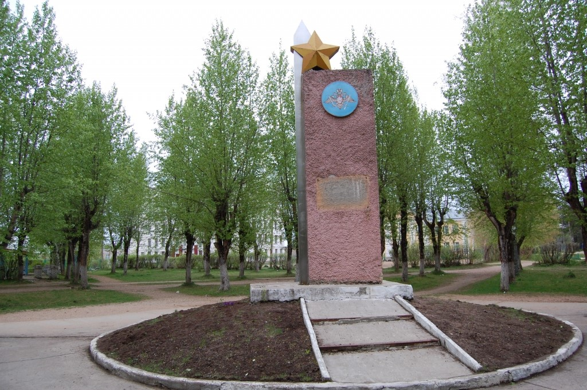
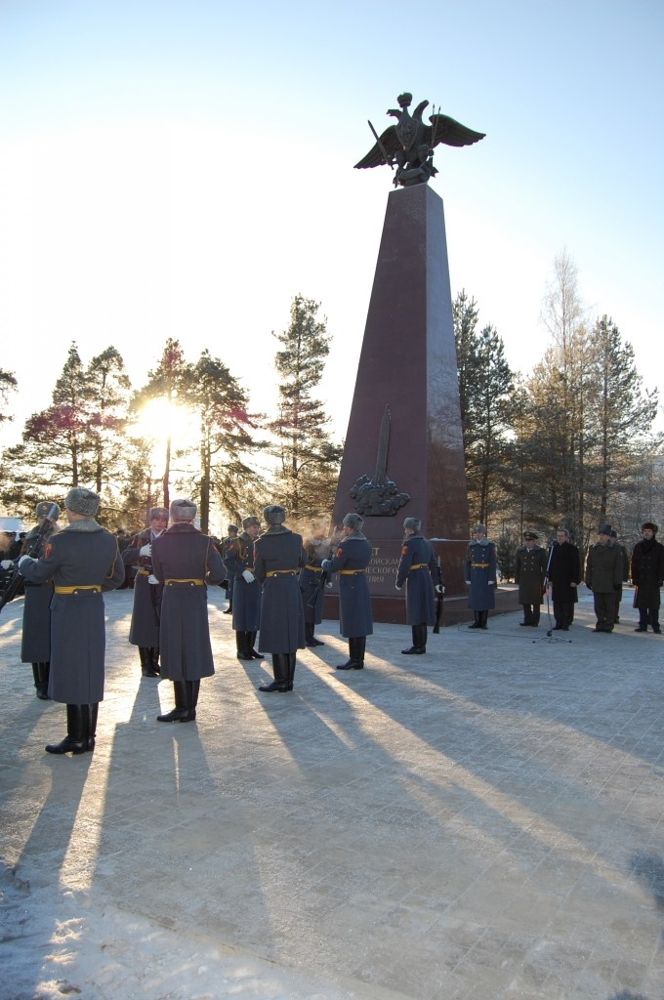
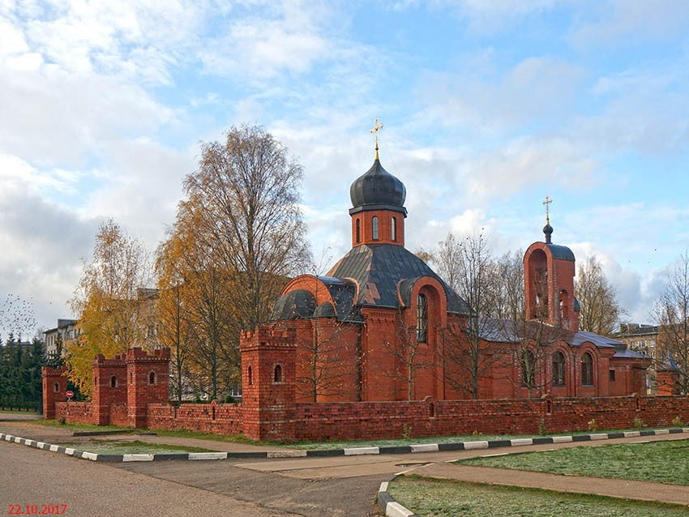
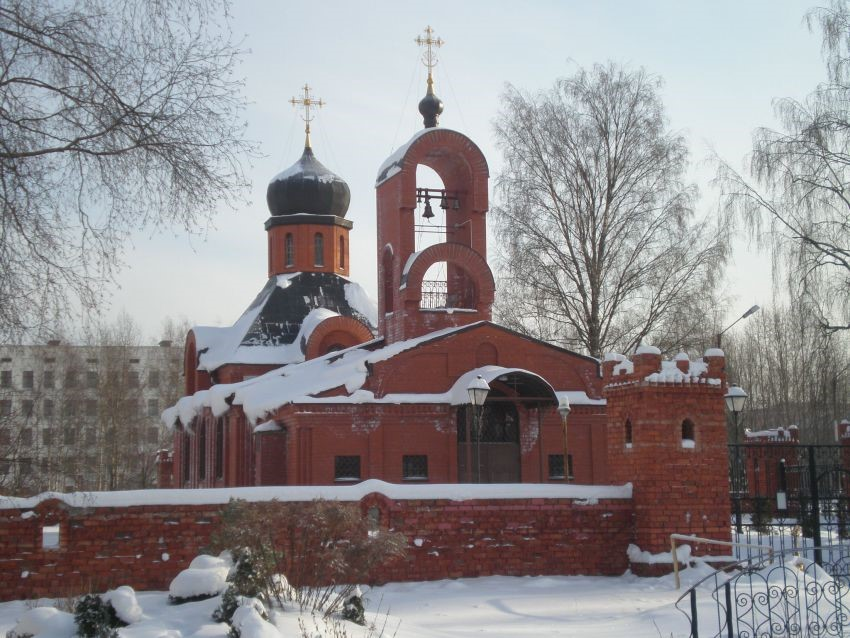

ЗАТО Озёрный
Культура
Парк имени маршала Неделина
Парк имени маршала М.И. Неделина находится в центральной части жилой зоны ЗАТО Озерный и занимает площадь 3 га. Митрофан Иванович Неделин советский военачальник. Первый Главнокомандующий Ракетными войсками СССР , командующий Артиллерией Советской Армии. Внёс большой вклад в создание РВСН, разработку, испытание и принятие на вооружение ракетно-ядерного оружия. Главный маршал артиллерии. Герой Советского Союза (28.4.1945).

Памятная стела в честь 50-летия ракетных войск стратегического назначения

Стела в честь 50-летия ракетных войск стратегического назначения открыта 21.12.2009 г. Памятник высотой около 15 метров представляет собой гранитный постамент, на котором расположены символы Министерства обороны и ракетных войск России – орел и ракета. Монумент сделан по проекту скульптора Андрея Ковальчука. На открытии было сказано, что история Режицкого краснознаменного ракетного соединения, которое дислоцировано здесь, неразрывно связана со всей историей ракетных войск.
Црковь Андрея Первозванного


Кирпичный храм с полуциркульной апсидой и необычной звонницей, возведен в 1998 году. Территория храма огорожена необычной кирпичной оградой, которая эстетично вписывается в архитектурный комплекс. Храм освящен в честь святого Андрея Первозванного.